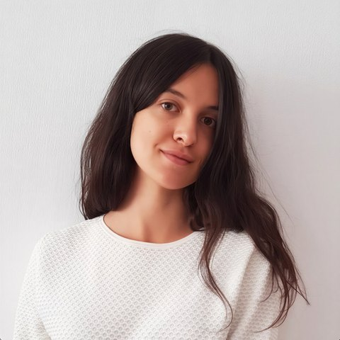

Polina Povarova
FarmKind
Examining What Actually Works in Getting People to Act
A review of the research on what actually gets people to take action, focused on how good the evidence really is. Students will produce a list of the findings that hold up, separating well-evidenced techniques from those that were never properly tested or failed to replicate.